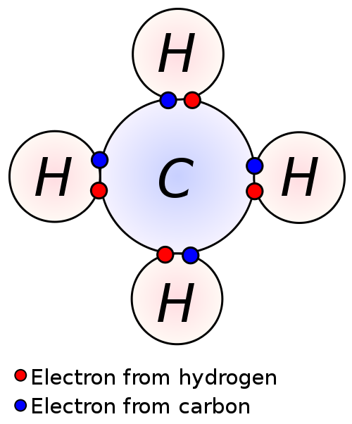
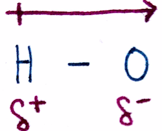
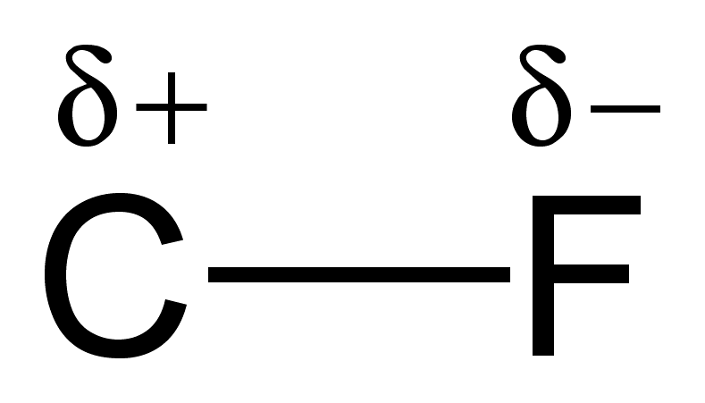
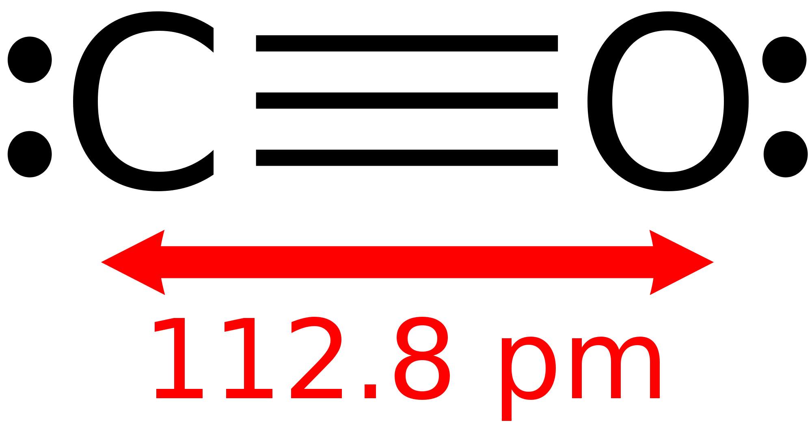

So far, everything we've talked about has been in terms of molecules and atoms. A question that may have crossed your mind is what makes molecules stick together. The answer to this question is a bond, which is an electron interaction between molecules. Bonding allows us to predict and describe the structure and behavior of molecules, both at microscopic and macroscopic levels. In this section, we'll cover the properties that determine whether atoms will bond or not.
Recall that all atoms want 8 valence electrons according to the Octet Rule. If an atom doesn't have 8 electrons, it will try to take or give away electrons until it has 8 electrons. The closer the number of valence electrons to 8 an atom has, the more it'll want electrons. For example, the halogens (group 7) have 7 valence electrons and will do anything to get the last electron, whereas the alkali metals (group 1) only have 1 valence electron and will try to get rid of the 1 valence electron to expose the inner shells. We quantified this "want for electrons" as electronegativity.
This concept is covered more in depth in this earlier post:
We said earlier that atoms will "take" electrons from other atoms if they have yet to satisfy the octet rule. While this is possible, most of the time atoms actually end up sharing electrons. Atoms bond in order to satisfy a filled valence shell , usually in the form of the octet rule.

This is a really good picture detailing what a bond is because we can see the individual electron contributions. Carbon is a group 4 element, which means that it has 4 valence electrons. This is right in the middle, so carbon can be said to not be an extremely electronegative element. Certainly, carbon still wants to satisfy its octet. Hydrogen is a part of group 1 and thus has 1 valence electron. Instead of following the octet rule however, `H` follows the duet rule, which states that `H` only wants 2 valence electrons as opposed to 8. In a few posts, we'll explore more exceptions to the octet rule and the reasoning behind them.
Since `C` wants 4 more electrons and each `H` wants 1 more electron, we can have 4 `H` atoms each share its electron with `C`, thereby satisfying the octet rule for `C` and the duet rule for `H`. `C` had 4 valence electrons initially and now has 4 electrons shared from 4 `H` atoms. We can now define a bond as a sharing of 2 electrons. We can say that the 4 `H` atoms are each bonded to `C`, since there is a sharing of 2 electrons between each `H` and `C`.

We abbreviate bonds as a short line between the bonded atoms. In this picture of the water molecule, the two straight lines between `O` and `H` are bonds. Since a bond is 2 shared electrons, each line represents 2 electrons.
Let's see if the water molecule has all valency satisfied. Oxygen follows the octet rule and therefore wants 8 valence electrons. Oxygen has 6 electrons since it's a group 6 element; valency for oxygen is not yet satisfied. `H` follows the octet rule and therefore wants 2 valence electrons. Since `H` is group 1, it only has 1 electron. The picture shows 2 `H-O` bonds, indicating that there are 4 electrons being shared in total. Oxygen now has 8 valence electrons - 6 from the oxygen atom itself and 1 from each of the `H`. Each `H` molecule now has 2 valence electrons - 1 from itself and 1 from the oxygen. Valency is therefore satisfied for all atoms in the molecule.
We're going to introduce a new term to help us characterize molecules and bonds. The polarity of a bond describes the difference in electronegativity between the two atoms involved in bonding.

The polarity of the bond is the absolute value of the difference between the electronegativity of bonding atoms:
`"Polarity" = |"Electronegativity"_("atom" 1) - "Electronegativity"_("atom" 2)|`
Consider the water molecule used earlier in this post. The electronegativity of each H-O bond can be calculated by subtracting the electronegativity values of `H` from `O`, or `O` from `H`, and taking its absolute value:
Polarity of H-O bond: |`EN_O - EN_H|= |3.44-2.20|=1.24`
NOTE: EN == Electronegativity
When there is a difference in electronegativity, the electrons will concentrate closer to the more electronegative atom. This makes sense once you think about it: since the more EN atom wants electrons more than the less EN atom, the more EN atom will pull electrons towards it harder than the less EN atom. In the H-O bond, `O` is clearly more EN and thus, the electrons will be slightly closer to `O` than `H`.
We use dipole moments to characterize and indicate a difference in EN of a bond.
 
The dipole itself is the arrow above the bond and points from the less EN atom to the more EN atom. In the picture to the right, the dipole points from H to O in the direction of increasing electronegativity. Additionally, a dipole can be written via `delta^+` and `delta^-`, as seen below the bonds: the less EN atom is marked `delta^+` and the more EN atom is marked `delta^-`. You can think of a a dipole as an indication of where electrons are more concentrated.
Aside from single bonds, double bonds and triple bonds also exist. A double bond is exactly what the name implies: two bonds. In the picture below, the `Si` atoms are double bonded to each other which is represented by two straight lines. This means that there is a total of 4 electrons being shared between the two atoms.
Let's check valency. `Si` follows the octet rule, so each `Si` atom should have 8 valence electrons. As a group 4 element, it has 4 valence electrons by default. Since each `Si` is bonded to 2 `H`, there are 2 additional electrons. Finally, it gets the last 2 electrons from the double bond. A double bond is just like a single bond, except there are 4 electrons instead of 2. Alternatively, you can also count valency just by looking at the number of bonds. Since there are 4 bonds for each `Si` atom, there are a total of 8 valence electrons.

A triple bond is the same way. Instead of having 2 electrons shared, a triple bond has 6. This is shown in the C-O molecule on the right: the triple bond contains 6 electrons. This allows both `C` and `O` to satisfy their octets.
Something we haven't really considered is how strong a bond can be. Just like the bond between you and your pets is, hopefully, stronger than the bond between you and the candy you ate this morning, bonds can vary in strength. In general, the strength of a bond increases with the number of shared electrons. In other words, a triple bond is stronger than a double bond, which is stronger than a single bond.
Additionally, the stronger the bond is, the shorter the bond. The opposite is also true: the weaker the bond, the greater the length. Imagine the difference between a jump rope and a short metal rod. If you pull as hard as you can on both sides, the jump rope is more likely to break before the metal rod is. The metal rod is stronger than the jump rope, seeing as there's more material packed tightly inside the rod. The same principle applies for bonds: a triple bond has a higher electron concentration between the bonding atoms and is therefore stronger than bonds with less electron concentration. Strength and length are inverse properties, just like wave frequency and wavelength.
This is a pretty simple concept that confuses a lot of students. In order to form a bond, energy must be released. This is actually why molecules bond to each other. An important concept universal in all of science is that of stability: lower energy states are more stable. By bonding, molecules can achieve a lower energy state than if they were un-bonded.
Consequently, we can say that whenever a bond is formed, energy is released. Whenever a bond is broken, energy is absorbed.
A bond consists of 2 electrons shared between 2 atoms.
The first reason that atoms bond is to fill up their valence shell.
Hydrogen is an exception to the Octet Rule and instead follows the Duet Rule, where H only wants 2 electrons to satisfy its octet.
The polarity of the bond is the difference in electronegativity between the bonding atoms.
The electrons in a bond are closer to the more electronegative atom.
Double bonds and triple bonds involve more electrons being shared between the bonding atoms.
The strength of a bond increases with the number of electrons involved with the bond.
The stronger the bond, the shorter then bond.
In the process of forming a bond, energy is released.
The second reason that atoms bond is to achieve a more stable state through the releasing of energy via. bond formation.